在《绿野仙踪》的结尾，稻草人并没有得到大脑，但他获得了智慧。通过彻底篡改毕达哥拉斯定理来炫耀自己的新知识，他自豪地说：
事实上，毕达哥拉斯定理没有提到等腰三角形，而是指出直角三角形——其中一个是直角（90°）的三角形——的边长之间的关系。
等腰三角形是有两条边相等的三角形。
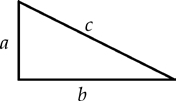
假设有一个直角三角形，我们用字母a和b表示直角边的长度（形成直角的两边），我们用c表示斜边长度（剩下的一边）。
毕达哥拉斯定理认为这三个长度的关系可以表示为等式
a2+b2=c2
以下是这个定理正确的陈述（如同稻草人想要陈述的那样）：
毕达哥拉斯定理：在直角三角形中，斜边长度的平方等于另外两边长度的平方之和。
毕达哥拉斯定理表明大小为1×1的正方形的对角线长度为2。证明过程如下：注意这样一个正方形的对角线创建了两个直角三角形，它们的直角边的长度都是1，对角线的长度是未知的，设为c；根据毕达哥拉斯定理，c2=12+12=2；取平方根得出c=2；我们在第4章讨论了数字2。
我们提出的论证是基于几何分割的思想：我们画一个图形，以两种不同的方式来计算它的面积，然后——好啦——毕达哥拉斯定理出现了。证明如下。
从四个相同的直角三角形开始，它们的直角边长度为a和b，斜边长度为c。把这四个图形排列，形成一个大的（a+b）×（a+b）的正方形，如下图所示：
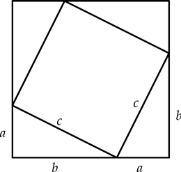
这个大正方形的面积是(a+b)2=a2+2ab+b2。
现在我们把这个图解分割为五个部分：四个直角三角形加一个c×c的正方形。这里是重新排列后的图形，以方便查看：
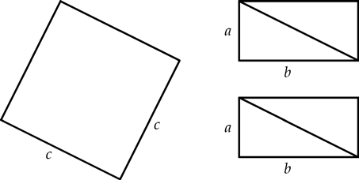
我们已经将四个直角三角形组合成两个矩形，以使得总面积的计算尽可能简单：正方形的面积是c2，两个矩形的面积都是ab。所以这些部分的总面积是c2+2ab。
我们用两种方法确定了图的面积：一种得出的面积是a2+2ab+b2（从原图得出），另一种是2c+2ab（来自重新排列的图形）。由于这些都是正确的计算图形面积的方法，我们得出结论：
a2+2ab+b2=c2+2ab
从这个等式的两边减去2ab得到：
a2+b2=c2
毕达哥拉斯定理得到了证明。
毕达哥拉斯定理还有其他的分割证明法，具有相同的形式。我们将一些直角三角形组合成一个形状，计算出该形状的面积，将其与组成部分的面积进行比较，得到一个方程：a2+b2=c2。
例如，将四个直角三角形排列成一个大小为c×c的正方形，如下所示：
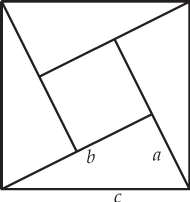
这个证明归功于12世纪的印度数学家巴斯卡拉（Bhaskara）。
这个图形的总面积是c2。现在请求出小的内部正方形加上四个三角形的面积。详见[1]。
这是美国第20任总统詹姆斯·加菲尔德提出的另一种分割证明。
使用两个直角三角形和一条线段构成一个梯形。
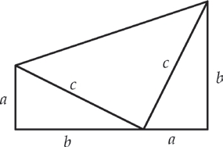
梯形是一个四边形，其中两边是平行的，而另外两边是不平行的。平行的两边被称为梯形的底边。梯形的面积公式是
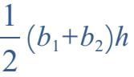
，其中b1，b2是底边的长度，h是底边之间的距离。注意，加菲尔德的图解可以看作我们第一次证明中所用图的一半。
直接计算梯形的面积，然后用三个三角形的面积相加再计算一次。答案见[1]。
本节讨论复数，我们曾在第5章中介绍过。
数字的绝对值是删除数字负号的结果（如果有的话）。例如，|–5|等于5。我们可以把–5这个数字看成是“大小为5”，但是是在负的方向上。更严格地说，绝对值是这样定义的：
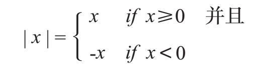
因此|12|=12，|–7|=7，且|0|=0。
这里有一个几何解释：数字x的绝对值是数字线上x和0之间的距离。
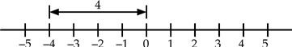
数字的绝对值是数字从左边或右边距离0的距离，数字（正数或负数）的符号并不重要。
我们如何将绝对值的概念扩展到复数？|3+4i|是什么意思？我们不能说3+4i是正的或负的——这些描述不适用于此类情况。相反，我们的目标是将复数的绝对值定义为到0的距离。为此，我们需要复数的一个几何图形。就像实数可以在一条线上可视化那样，复数也能被表示为平面上的点。假设复数3+4i位于原点右侧3个单位，然后向上4个单位，如图所示。
将复数3+4i可视化为平面上的一个点。
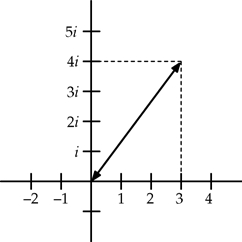
现在我们计算从3+4i到原点的距离。这由图中的双向箭头表示。注意，这个箭头是边长为3和4的直角三角形的斜边。设c为该斜边的长度。根据毕达哥拉斯定理
c2=32+42=9+16=25
因此c=
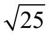
=5。结论：|3+4i|=5。难题！数字1，–1，i和–i的绝对值都等于1，但它们不是所有绝对值为1的数字。以几何形式描述绝对值等于1的所有复数。答案见[1]。
一般情况下，复数a+bi位于一个点，a位于0的水平单位，b位于0的垂直单位。将原点和a+bi相连的线段是直角三角形的直角边，其长度为a和b。用c来表示斜边的长度，根据毕达哥拉斯定理c2=a2+b2，因此
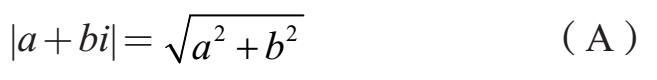
注意，该公式适用于实数以及复数。例如，要计算|–4|的笨办法是，我们把–4看作–4+0i。将a=–4和b=0代入方程（A）中，得
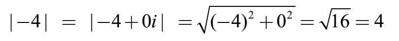
一个直角三角形，其直角边长度为3和4，斜边长度为5。三个长度都是整数。另外，如果直角边的长度是5和12，那么斜边长度是
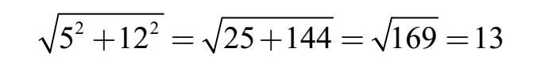
边长为3，4，5的直角三角形为古埃及人所知。
这也是一个整数。我们并不总是那么幸运。如果直角边的长度是2和3，则斜边长度是13，这不是一个整数。
形成直角三角形边长的三个正整数a，b，c，称为毕达哥拉斯三元数组（Pythagorean triple）。
最简单的例子是3，4，5和5，12，13。还有其他的吗？我们如何找到它们？令人惊讶的是，产生毕达哥拉斯三元数组的关键在于复数！
在我们深入细节之前，让我们看看复数z=2+i如何产生3，4，5这个三元数组：
●步骤1：计算z2。
z2=(2+i)×(2+i)=(4–1)+(2+2)i=3+4i
●步骤2：计算|z2|。因为z2=3+4i所以
|z2|=32+42=25=5
步骤2中的计算表明3，4，5是毕达哥拉斯三元数组：在复平面中从0到3+4i的线段形成直角边长为3和4的直角三角形的斜边，其长度为5。
我们再次用复数z=3+2i来尝试这个过程。我们计算z2，然后它的绝对值是：
z2=(3+2i)×(3+2i)=(9–4)+(6+6)i=5+12i
|z2|=|5+12i|=
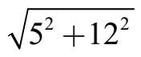
=169=13我们找到了5，12，13三元数组！
再举一个例子，然后我们将探讨它的原理。
从z=5+2i开始，求它的平方并计算结果的绝对值：
z2=（5+2i）×（5+2i）=（25–4）+（10+10）i=21+20i
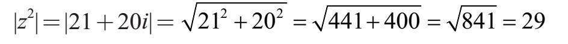
我们发现了另外一个毕达哥拉斯三元数组：20，21，29。
让我们通过回到第一个例子来探索这个工作原理：z=2+i。注意
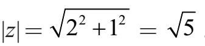
现在，如果我们平方z，我们得到z2=3+4i，其绝对值是|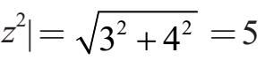
，总结：|z|=5 且 |z2|=5
至少在这个例子中，我们得出|z2|=|z|2。
|z2|=|z|2永远可行吗？当然，对于实数是这样的（例如，|（–4）2|=|16|=|–4|2），但是验证是否适用于复数则需要一点代数的知识[z1]。
如果你愿意，最开始可以认为|z2|=|z|2适用于所有复数。之后你可以用复杂的代数研究出来。
让我们回到创建毕达哥拉斯三元数组的过程。我们从一个复数z=x+yi开始，其中x和y都是整数。其绝对值|z|可能不是整数，但它是一个整数的平方根：
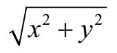
。但是，z2的绝对值必定是整数：|z2|=|z|2=x2+y2。扩展z2得一个复数x+yi，其中x和y都是整数，称为高斯整数。
z2=(x+yi)×(x+yi)=(x2–y2)+(2xy)i
取a=x2–y2，b=2xy，c=x2+y2，得出|a+bi|=c，因此a2+b2=c2。
最后一个例子：令z=7+4i。其平方等于33+56i，其绝对值|z2|=
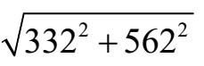
=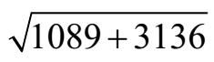
=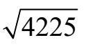
=65，我们得到另一个毕达哥拉斯三元数组：33，56，65。我们已经证明这个过程创造了毕达哥拉斯三元数组。我们会很自然地问：每个毕达哥拉斯三元数组都可以这样创建吗？答案是肯定的，但是论证更为复杂，我们建议参考一本关于数论的书来获取更多信息。
我们刚刚考虑了满足毕达哥拉斯定理的三个整数。这个讨论与直角三角形的世界只有微小的联系。我们现在完全抛开几何，并思考a2+b2=c2关系的扩展。
很容易找到满足关系a+b=c的整数a，b，c的三元数组。上一节给出了一个找到满足2a+b2=c2的整数三元数组的方法。我们现在的任务是扩展到更高的指数：我们可以找到满足a3+b3=c3的整数的三元数组吗？……或者4a+b4=c4？……或a5+b5=c5，依此类推？
这里有两个关于方程a3+b3=c3的无趣的整数解：
53+03=53以及53+(–5)3=03
有趣的挑战是找到三个整数a，b，c，其中每个符合a3+b3=c3的整数都不为零。这样的解被称为非平凡的（nontrivial）。
这个问题是皮埃尔·德·费马（Pierre de Fermat）于1637年提出的。费马在一本书的边缘上写道，方程an+bn=cn没有非平凡的整数解。他写下这句名言（原文为拉丁文）：
这则逸事在数学界是一个神圣的神话，许多书籍和文章都对此有过记述。
费马有证据吗？这是令人怀疑的。一个更有趣的问题：费马相信他有证据还是他在开玩笑？我更喜欢后一个解释。
由于他的论断，这个结果被称为费马大定理（Fermat’s Last Theorem），尽管人们怀疑费马是否真的有证据证明了，但这个问题的解决用了三个多世纪，在20世纪90年代中期由安德鲁·威尔斯（Andrew Wiles）证明了。费马大定理的确是一个定理，正如威尔斯的研究所表明的那样，对于任何指数n≥3的方程，an+bn=cn都没有非平凡的解。
[z1][1]在巴斯卡拉图中，小正方形的面积是（b–a）2。由此得出等式
2c=(b–a)2+2ab
注意(b–a)2=a2+b2–2ab，所以这个方程变成
2c=(a2+b2–2ab)+2ab=a2+b2
加菲尔德证明，梯形的面积是
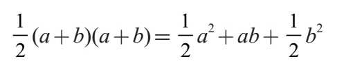
而这些部分的总面积是
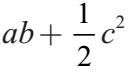
（ab为两个原始的直角三角形的直角边，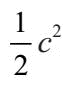
为另一个直角三角形的直角边）。设定这些相等得出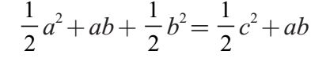
两边的ab抵消，然后乘2，得a2+b2=c2。
[1]证明：| z2|=| z |2
策略是考虑复数z=x+yi，然后求出|z2|=|z|2；幸运的是，它们都是相等的。
我们从|z|2开始。记住|x+yi|=
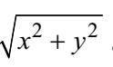
因此
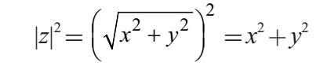
接下来我们计算z2
2z=(x+yi)×(x+yi)=(x2–y2)+(2xy)i
最后，我们计算|z2|
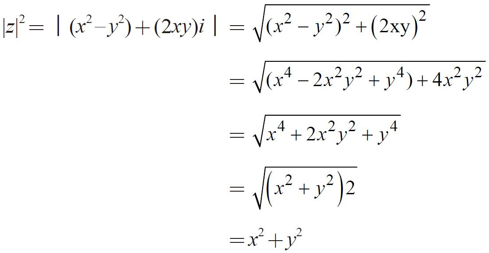
注意，|z|2和|z2|都等于x2+y2，因此它们是相等的。这完成了对于复数z的|z2|=|z|2的证明。
[1]难题的答案：一个复数的绝对值等于它到原点的距离。所以这些数字形成一个以原点0+0i为中心的半径为1的圆。